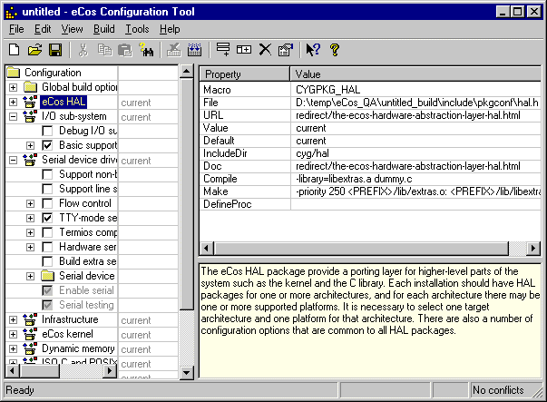
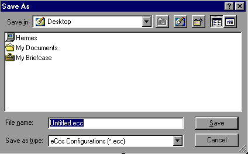
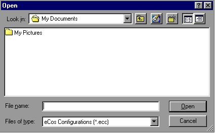

|
Getting Started |
||
The eCos Configuration Tool is used to tailor eCos at source level, prior to compilation or assembly, and provides a configuration file and a set of files used to build user applications. The sources and other files used for building a configuration are provided in a component repository, which is loaded when the eCos Configuration Tool is invoked. The component repository includes a set of files defining the structure of relationships between the Configuration Tool and other components, and is written in a Component Definition Language (CDL). For a description of the concepts underlying component configuration, see CDL Concepts .
The Configuration Tool runs on both Linux and MS Windows, adopting the appropriate look and feel on each platform. There are some minor differences in look and feel, and sometimes functionality, between the Linux and the MS Windows versions. Where these differences are significant, they will be described, but generally screenshots are provided for one platform only.
Add the eCos Configuration Tool install directory to your PATH, for example:
export PATH=/opt/ecos/ecos1.5.0/bin:$PATH
You may run configtool with zero, one or two arguments. You can specify the eCos repository location, and/or an eCos save file (extension .ecc) on the command line. The ordering of these two arguments is not significant. For example:
configtool /opt/ecos/ecos1.5.0/packages myfile.ecc
The Configuration Tool will be displayed (see Figure 1 below).
There are two ways in which to invoke the eCos Configuration Tool:
from the desktop explorer or
program set up at installation time (by default Start
 Programs
Programs
 Red Hat eCos
Red Hat eCos
 Configuration Tool ).
Configuration Tool ).
type (at a command prompt or in the Start menu's Run item): <foldername>\ConfigTool.exe where <foldername> is the full path of the directory in which you installed the eCos Configuration Tool. The Configuration Tool will be displayed (see Figure 1 below).
You may run configtool with zero, one or two arguments. You can specify the eCos repository location, and/or an eCos save file (extension .ecc) on the command line. The ordering of these two arguments is not significant. For example:
configtool "c:\Program Files\Red Hat\eCos\packages" myfile.ecc
Figure 1: Configuration Tool

When you invoke the eCos Configuration Tool, it accesses the Component Repository, a read-only location of configuration information. For an explanation of "Component Repository" see CDL Concepts .
The eCos Configuration Tool will look for a component repository using (in descending order of preference):
A location specified on the command line
The component repository most recently used by the current user
An eCos distribution under /opt/ecos (under Linux) or a default location set by the installation procedure (under MS Windows)
The final case above will normally only occur if the previous repository has been moved or (under Windows) installation information stored in the NT registry has been modified; it will result in a dialog box being displayed that allows you to specify the repository location:
Repository relocation dialog box
Note that in order to use the eCos Configuration Tool you are obliged to provide a valid repository location.
In the rare event that
you subsequently wish to change the component location, select Build
 Repository and the above dialog box will then be displayed.
Repository and the above dialog box will then be displayed.
eCos configuration settings and other information (such as disabled conflicts) that are set using the eCos Configuration Tool are saved to a file between sessions. By default, when the eCos Configuration Tool is first invoked, it reads and displays information from the Component Registry and displays the information in an untitled blank document. You can perform the following operations on a document:
Use the " File Save
" menu item or click the Save Document icon on the toolbar; if
the current document is unnamed, you will be prompted to supply a
name for the configuration save file.
Save
" menu item or click the Save Document icon on the toolbar; if
the current document is unnamed, you will be prompted to supply a
name for the configuration save file.

Select File
 Open, or click the Open Document icon on the toolbar. You will be
prompted to supply a name for the configuration save file.
Open, or click the Open Document icon on the toolbar. You will be
prompted to supply a name for the configuration save file.

Click its name at the bottom of the File menu.
Documents may also be opened by:
double-clicking a Configuration Save File in the desktop explorer (MS Windows only)
invoking the eCos Configuration Tool with the name of a Configuration File as command-line argument, or (under MS Windows) by creating a shortcut to the eCos Configuration Tool with such an argument.
Select File
 New, or click the New Document icon on the toolbar.
New, or click the New Document icon on the toolbar.
Select File
 Save As. You will be prompted to supply a new name for the
configuration save file.
Save As. You will be prompted to supply a new name for the
configuration save file.
The location of the build and install trees are derived from the eCos save file name as illustrated in the following example using MS Windows filename conventions:
Save file name = "c:\My eCos\config1.ecc"
Install tree folder = "c:\My eCos\config1_install"
Build tree folder = "c:\My eCos\config1_build"
These names are automatically generated from the name of the save file.
See also CDL Concepts .
|
Getting Started |
||